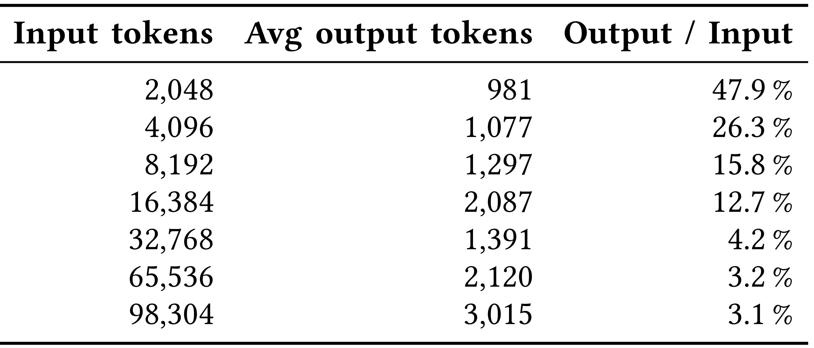
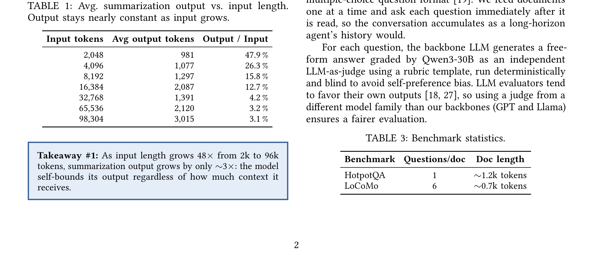

Parallel Context Compaction for Long-Horizon LLM Agent Serving：长程 LLM Agent Serving 的并行上下文压缩
论文入口：arXiv:2605.23296。作者：Musa Cim, Burak Topcu, Chita Das, Mahmut Taylan Kandemir。机构口径：The Pennsylvania State University。代码/项目页状态：未核验到独立开源仓库；以 arXiv/PDF 实验设置为准。主类别：LLM；公开日期：arXiv submitted 2026-05-22。
把长程 agent 的同步上下文压缩改成可并行的分块 compaction，使摘要长度、触发阈值、block size、TPOT 和任务准确率能被一起调度。 本笔记按当前流水线的精读要求重写：先记录公式清单、方法模块清单和图表清单，再围绕论文原文的任务设定、训练/推理链路、实验表和工程边界展开。
1. 背景和问题
长程 agent 会不断积累系统提示、用户轮次、工具调用、观察结果和中间计划。当历史超过上下文窗口时，常见做法是调用一个 LLM summarizer 把整段历史压缩成摘要，再继续执行任务。这个策略有两个缺陷：摘要是有损的，可能遗忘关键约束；压缩调用是阻塞的，可能让 agent 推理停几十秒。Parallel Context Compaction 正是在这个背景下提出：把一次性串行压缩拆成多个并行块，让 compaction 成为可调服务参数。
论文的视角很工程化。它不只问摘要质量，还问 output tokens 与 input length 的关系、prompt variant 的稳定性、不同模型和 block size 的 TPOT、E2E wall time 中 compaction 占比、以及 HotpotQA/LoCoMo 上准确率是否被破坏。这些指标共同决定一个 serving 系统能否上线。若只看 token 节省而忽略 wall time，agent 仍会被阻塞；若只看速度而忽略准确率，系统会更快地产生错误。
对推荐系统也有直接类比。推荐会话、搜索改写、多轮客服和长期用户画像同样需要压缩历史状态。一个可用的压缩方案必须知道哪些信息可以并行摘要，哪些时间顺序、用户最新修正或工具结果必须保留。本文的贡献不在“摘要”这个概念本身，而在把摘要压缩的触发阈值、块大小、输出长度和服务延迟纳入统一评估。
更具体地说，Parallel Context Compaction for Long-Horizon LLM Agent Serving 的问题不应被读成单点模型改进，而应读成系统状态如何被建模、验证和服务化。旧链路通常把关键状态分散在人工规则、离线日志、缓存、业务策略或一次性 prompt 里，最终只能看到平均指标，却无法解释指标变化来自哪里。本文把这些状态拉回可观察接口：输入是什么，输出是什么，何时训练，何时推理，失败时如何定位。
这也是它和今天其他论文共同的地方：LLM 方向在处理 skill、memory、context，推荐方向在处理 user story、retriever distillation 和 generative backbone。它们都说明模型能力越来越依赖外部状态管理。阅读这篇论文时，我会持续追问三个问题：第一，论文是否明确记录了状态来源；第二，方法是否有独立验证或对照；第三，结果是否足以支持生产迁移，而不是只在某个离线表里好看。
补充背景时，要把 context compaction 看作 serving 问题，而不是单纯 prompt 摘要。长程 agent 一旦在真实环境运行，历史里会混合用户指令、工具返回、错误尝试、文件路径、外部状态和安全约束。压缩错一条普通聊天内容可能影响不大，压缩错一个文件路径或最新用户修正就会导致任务失败。论文之所以强调 wall time、TPOT 和 accuracy，是因为 compaction 的每一次触发都会影响用户等待和后续行为正确性。
传统串行压缩还有触发频率问题。阈值 τ 太低，系统频繁压缩，每次都是阻塞调用；阈值太高，模型长时间背负巨大上下文，直到触发时又产生一次大停顿。并行 compaction 试图改变这个成本结构：把大停顿拆成多个小 worker，同时保持摘要长度可控。
对本地 agent 平台来说，这篇论文的背景问题非常具体：我们需要决定何时压缩、压缩哪部分、用哪个模型、保留多少最近原文、如何处理摘要冲突、以及失败时能否回放原始历史。这些都是服务接口问题，不是摘要 prompt 写得好不好。
背景还可以从“可压缩性”角度理解。长历史并不是每个 token 都等价：寒暄、过期计划和重复观察可压缩；最新指令、失败原因、工具返回和安全规则不能轻易压缩。Parallel compaction 的价值在于给可压缩部分并行处理，但它并没有自动解决哪些信息不可压缩的问题。这部分仍需要系统设计。
背景还可以用“摘要误差会累积”来理解。串行 compaction 每次把旧历史压成新摘要，下一次又压缩包含摘要的历史；一旦早期摘要遗漏了约束，后面很难恢复。并行 compaction 不直接解决误差累积，但它让压缩过程更可控：可以保留最近原文、独立检查每个块，并在 merge 时标记冲突。
补充背景：很多 agent 失败并不是因为模型不知道答案，而是因为上下文管理把关键状态藏没了。长历史越多，模型越容易在过期计划、重复观察和最新指令之间混淆。并行压缩如果设计得好，可以减少无关历史干扰；设计不好，则会把混淆提前固化进摘要。
2. 方法
方法章是本笔记的主体。先列公式和图表清单，再按论文真实模块解释训练与推理链路。主文对象包括 Table 1/2 的输出长度和 compaction wall-time 占比、Table 3 的 benchmark 统计、Figure 1 的串行/并行概览、Table 4 的模型设置、Figure 2/3 的输出 token 稳定性、Figure 4 的任务准确率、Table 7/8 的 HotpotQA/LoCoMo block-size 结果、Table 9 的 matched decode 速度、Table 10 与 Figure 5 的 gpt-oss-120B 分析。本文截图保留 Figure 1 和 Figure 4，其他表格在实验章解释。
2.1 公式清单与方法地图
长程历史。
符号解释：H_t 包含系统提示 s、历史用户请求 u 和 agent 响应/工具行为 a，是 compaction 的输入对象。 这条公式在笔记中的作用是把论文描述转成可检查变量，复现时应能在数据、日志或配置中找到对应字段。
串行压缩。
符号解释：p_c 是压缩提示；串行方法把完整历史一次性送入 summarizer，输出新的摘要历史。 这条公式在笔记中的作用是把论文描述转成可检查变量，复现时应能在数据、日志或配置中找到对应字段。
并行分块数量。
符号解释：X 是待压缩历史，B 是 block size；块越小，worker 越多，单 worker 输入越短，但合并成本和跨块依赖风险更高。 这条公式在笔记中的作用是把论文描述转成可检查变量，复现时应能在数据、日志或配置中找到对应字段。
延迟分解。
符号解释：并行压缩的收益来自取最大 worker 时间而不是总和，但需要额外合并阶段。这个式子是服务层理解，不是论文编号公式。 这条公式在笔记中的作用是把论文描述转成可检查变量，复现时应能在数据、日志或配置中找到对应字段。
2.2 论文核心流程
方法从串行 compaction 的限制开始。串行方案在历史达到阈值 τ 后，把完整历史交给一个 LLM 压缩，再把摘要作为后续上下文。论文指出，prompt engineering 不能从根本上解决两个问题：输出长度随输入增长并不稳定，且 compaction 调用会阻塞 agent 主循环。Table 1/2 的动机数据表明，当输入从 2k 增长到 96k 时，输出长度和 compaction wall time 都会成为瓶颈；低阈值还会让 compaction 频繁触发。
并行 compaction 的核心是把待压缩历史 X 切成 N 个 block，每个 block 独立调用 summarizer。block size B 决定 worker 数量：B 越小，并发度越高，但每个摘要更局部；B 越大，信息完整性更好，但并行收益下降。论文并没有假设一个固定最佳 B，而是在 HotpotQA 和 LoCoMo 上扫描多个 block size，比较准确率、输出 token、TPOT 和 wall time。

补充看这张流程图时，关键是区分请求关键路径上的阻塞时间。Sequential compaction 把长历史交给一次摘要调用，主 agent 必须等整个压缩完成；parallel compaction 把历史分块后并行摘要，再用较短的 merge 阶段汇总。它并不声称每个块摘要都独立完美，而是通过并行化降低服务等待，同时用最终 merge 维护全局一致性。
这张图清楚展示了串行和并行压缩的服务差异。串行路径在阈值触发后等待一个完整 compaction 调用返回，主 agent 在这段时间内阻塞；并行路径把历史拆成多个块，让多个 worker 同时摘要，再由合并器产生压缩上下文。图中最值得注意的是延迟路径：并行方案的理论收益来自把总压缩时间变成最慢 worker 的时间加 merge 时间。与此同时，信息风险也从单个摘要器的遗漏变成“切块遗漏”和“合并冲突”两类问题，因此图里的合并节点是方法成败的关键。
2.3 训练目标与优化控制
切块边界是方法能否成功的关键。若按固定 token 切块，可能把问题和证据切开；若按会话轮次切块，可能保留语义边界但导致块长度不均；若按工具调用边界切块，适合 agent trace 但需要结构化日志。论文实验主要研究 block size 对服务指标的影响，本地复现时应额外测试会话边界和工具边界，因为生产 agent 的历史并不是均匀文本。
并行 worker 的输出还需要合并。合并阶段不能把所有局部摘要简单拼接，否则会产生冗余、冲突和顺序混乱。合理的 merge 应保留最近原文、长期摘要和结构化状态三层：最近原文用于处理用户最新约束，长期摘要用于保持背景，结构化状态用于记录任务目标、文件路径、工具结果和未完成计划。论文把 parallel compaction 作为服务策略，但实际落地必须把 merge 规则和风险监控补齐。
2.4 推理链路、服务约束与系统接入
服务指标方面，论文关注 TPOT、E2E wall time、compaction fraction 和 accuracy。TPOT 衡量 token 生成速度，E2E wall time 衡量用户等待，compaction fraction 说明压缩在总耗时中占多少。如果一个配置 TPOT 低但准确率掉很多，不能上线；如果准确率保持但 compaction fraction 仍高，说明并行度不足或触发阈值不合适。
方法的关键假设是局部摘要可组合。HotpotQA 与 LoCoMo 都需要跨文本段检索和长程记忆，因此能测试这个假设。但真实 agent 更复杂：工具调用可能改变外部状态，用户修正可能覆盖早期计划，安全约束可能只出现一次却必须长期保留。因此并行压缩最好先以 shadow 方式在历史 trace 上验证，不能直接替换当前上下文管理。
2.5 复现时应检查的实现细节
复现 Parallel Context Compaction for Long-Horizon LLM Agent Serving 时，应把论文模块拆成可观测的输入、输出、训练目标、推理路径和失败样本。每个模块都要记录数据来源、版本、延迟、成本、可回滚策略和与基线的差异。只有这些信息完整，论文结果才有本地迁移价值。
2.6 模块间信号流与落地检查
并行 compaction 的设计可以看成一个调度器。调度器监控上下文长度，当超过阈值 τ 时，把需要压缩的历史 X 拆成 N 个 block。每个 block 被发送给 compact worker，输出局部摘要 C_j。然后 merge 模块把多个 C_j 合成新的 compacted context，并与最近未压缩原文拼接。
block size B 是核心参数。若 B=96k，基本接近串行；若 B 很小，worker 数变多，单次摘要更快，但跨块信息更容易丢。论文在 Table 7/8 中扫描 block size，就是为了找到速度和质量之间的曲线。复现时不能只复制一个 B，而应根据本地模型吞吐、上下文结构和任务类型重新选择。
prompt variant 也会影响输出长度。Figure 2/3 显示不同提示和 backbone 下输出 token 的稳定性。一个 compaction prompt 如果输出长度随输入大幅波动，就很难做服务预算。生产系统需要把“摘要目标长度”写得足够明确，并监控实际输出分布，而不是只检查平均值。
merge 阶段必须处理冲突。不同 block 可能分别记录早期计划、后续修正和错误尝试。如果合并器简单把摘要拼接，agent 可能同时看到过期目标和最新目标。更好的做法是让每个局部摘要标记时间范围、任务状态、已废弃计划和待执行事项，然后 merge 时优先保留最新用户约束和安全规则。
论文实验主要使用 HotpotQA 和 LoCoMo，这决定了方法验证偏向问答和长记忆。真实 agent 还需要工具状态结构化。压缩器不应把工具返回中的 JSON、文件路径或命令结果自由改写成自然语言，尤其不能改变数字、路径、权限和错误码。落地时应把这些字段作为 protected state 单独保存。
并行调度还涉及硬件。多个 worker 是否真的并行，取决于 GPU 数、batching、模型加载、tensor parallel 和队列策略。论文提到 H100、H100 NVL、gpt-oss-120B 等设置，说明 speedup 不是纯算法结论，而与硬件拓扑强相关。
触发阈值 τ 的选择应结合上下文窗口和任务周期。若模型窗口为 128k，τ 不能设到接近上限才触发，因为还要给当前请求、工具结果和新规划留空间。若 τ 太低，压缩频率高，摘要误差反复累积。论文通过不同阈值和 wall-time fraction 展示了这个 trade-off。
block 的语义边界比 token 长度更重要。固定 B 可以方便实验，但真实 agent trace 应按轮次、工具调用、文件操作或子任务阶段切分。例如一次代码修改任务中，读取文件、编辑文件、运行测试、修复错误是不同阶段；把错误日志和修复动作切开会损害后续推理。
局部摘要提示需要要求保留状态变量。普通摘要会写“用户要求修改代码”，但 agent 需要的是具体文件、函数、错误消息和待办事项。并行 worker 的 prompt 应要求输出结构化字段：目标、已完成、未完成、关键证据、废弃计划、风险约束。这样 merge 才能可靠合并。
merge 模块可以分两步。第一步去重和排序，把局部摘要按时间范围与重要性排列；第二步冲突标注，不强行消解矛盾。例如早期摘要说“使用方案 A”，后期摘要说“用户否决方案 A”，merge 应保留后者并标记前者已废弃。
并行 compaction 还要处理 worker 失败。如果某个 block 摘要超时或出错，系统不能丢掉该块。可选策略包括回退串行压缩该块、保留原文片段、或降低摘要长度重新请求。服务系统必须把这些失败路径纳入 TPOT 和 wall-time 统计。
最后，摘要质量监控应有自动检查。可以检查关键实体是否保留、数字是否一致、工具结果是否被改写、未完成任务是否仍存在。对于高风险任务，还可以让主 agent 在继续执行前显式确认摘要中的关键状态。
实现并行 compaction 时，首先要定义不可压缩窗口。最近几轮对话、最新工具返回、用户刚修改的需求和当前 pending action 应保留原文。只有更早、更稳定的历史才进入 block workers。这样能降低摘要误差对当前任务的影响。
其次要定义块内摘要格式。每个 block summary 可以分为事实、决策、废弃内容、未完成事项和风险约束五栏。事实记录已经发生的操作，决策记录当前仍有效的选择，废弃内容记录后续被否定的计划，未完成事项给主 agent 继续执行，风险约束保留安全和权限边界。普通自然语言摘要如果不区分这些字段，merge 很容易混乱。
第三要做跨块引用。多跳问题常把问题、证据和答案分布在不同块。局部 worker 不一定知道另一个块的内容，因此它应显式记录“本块可能依赖其他上下文”的线索，例如实体名、文件名、变量名和未解析指代。merge 阶段再根据这些线索连接块。
第四要处理输出长度预算。每个 block 的预算 b_j 可以均分，也可以按块重要性分配。包含工具错误和用户修正的块应给更多预算，普通寒暄或重复日志给更少预算。论文公式里把整体预算 B 写成可控量，本地实现应进一步做动态预算。
第五要设计失败回退。若并行摘要后的任务失败，系统应能定位是哪个块遗漏了信息。可以让主 agent 在失败时请求展开某个 block 原文，或者保留原始历史索引。没有回退机制，压缩错误会变成不可解释的行为偏差。
第六要把延迟指标拆开。总等待时间包括切块、worker 排队、摘要生成、merge 和主模型继续推理。论文关注 TPOT 和 wall time，本地监控也应按阶段记录，否则不知道瓶颈在模型、队列还是 merge。
Parallel Context Compaction 还应定义摘要校验器。每次 worker 输出后，校验器检查关键实体、数字、文件名、URL、工具状态和用户约束是否仍在摘要中。校验失败时，系统可以要求该 worker 重新摘要，或保留原始 block。这个校验器可以由规则、轻量模型或主 agent 自检完成。
此外，parallel compaction 可以和 retrieval memory 结合。不是所有旧历史都要塞进摘要，部分事实可以进入结构化 memory 或 vector store，在需要时检索回来。这样上下文里只保留当前任务最关键的摘要，长尾证据保存在可追溯存储中。论文主要研究上下文压缩，但生产系统往往需要压缩、检索和结构化状态三者配合。
还要考虑隐私和权限。某些历史片段可能包含敏感 token、用户隐私或内部数据。并行 worker 越多，暴露面越大。服务实现应保证 worker 与主 agent 权限一致，日志脱敏，并限制摘要中泄露不必要敏感字段。
方法章还应补充摘要版本管理。每次 compaction 产生的摘要都应记录来源 block 范围、生成模型、prompt variant、输出 token、生成时间和校验状态。后续任务失败时，可以追溯失败答案依赖的是哪次摘要。没有摘要版本管理，compaction 错误很难定位。
并行压缩还可以做重要性调度。不是所有 block 都需要同等资源：包含用户最新需求、错误日志、测试结果和关键证据的 block 应使用更强模型或更长预算；普通寒暄、重复计划和已完成步骤可用更短摘要。这样能在同一延迟预算下保留更多关键信息。
此外，merge 后上下文应显式标注摘要来源。主 agent 看到某条事实时，最好知道它来自原文还是摘要、来自哪个时间段、是否经过校验。对于高风险操作，agent 可以要求展开原文再确认。这个设计能降低摘要幻觉导致的不可追溯风险。
方法章再补一个“状态分层”实现。第一层是 immutable log，保存完整原始历史，永远不被摘要覆盖。第二层是 compacted context，服务当前模型窗口。第三层是 structured state，保存任务目标、文件路径、约束、待办和风险标签。Parallel compaction 只更新第二层，并读取第三层作为保护信息。
这样做的好处是摘要错误可回滚。若主 agent 发现 compacted context 中信息不足，可以回到 immutable log 检索对应 block；若摘要与 structured state 冲突，优先相信结构化状态。论文关注并行摘要性能，本地落地应把这三层存储结合起来。
还要定义摘要刷新策略。不是每次触发都重新压缩全部历史，可以只压缩新增 block，并定期把多个旧摘要再合并成长期摘要。增量刷新能减少重复成本，也能降低旧摘要反复改写带来的漂移。
Parallel Context Compaction 的实现核心在于把压缩任务拆成可并行但仍可重组的块。块级压缩不能只按 token 数硬切，因为工具调用、用户目标、约束条件和中间结论往往跨越消息边界；如果一个块只保留局部摘要，最终合并时会丢掉“为什么做这个动作”的因果链。更稳妥的实现是先按回合或事件切分，再用 token 预算做二次裁剪，并在每个块摘要中强制输出任务状态、已验证事实、待办事项、关键文件或对象引用。
合并阶段的设计也很重要。论文强调并行压缩的墙钟时间优势，但最终摘要必须满足顺序一致性：后续块中的更正、失败和新决策应覆盖早期块的旧状态。工程上可以在合并提示中显式要求冲突解决规则，例如“同一变量以后文为准”“保留失败原因而非只保留最终动作”“把未完成项单独列出”。否则并行压缩虽然快，但会在长链路 agent 任务中制造隐蔽状态漂移。
如果把方法部署到真实 agent，还需要定义 compaction contract。每个块摘要都必须承诺保留哪些字段，例如当前目标、已完成动作、失败动作、文件路径、外部依赖、用户偏好、待确认问题和安全限制。没有 contract，压缩模型会按自然语言摘要习惯保留“看起来重要”的信息，却可能丢掉后续执行必需的低频细节。论文的并行化思想可以和这种 contract 结合：块内摘要负责局部事实，最终 merge 摘要负责跨块冲突和全局待办。
另一个落地点是 cache 与增量更新。长任务并非每次都要重新压缩全部历史，已经稳定的早期块可以缓存摘要，只对新增块和受影响块重新计算。这样并行压缩的收益会更明显：新增上下文到来时，系统只需要并行处理少数新块，再与旧摘要做增量合并。若能记录块摘要版本和原始消息范围，还可以在发现摘要错误时回滚到对应块重新压缩。
3. 实验结果
实验章按证据链阅读，而不是只摘最高指标。Parallel Context Compaction for Long-Horizon LLM Agent Serving 的实验对象包括主结果、消融、效率或线上/影子评估；每一类结果都要和论文主张一一对应。
3.1 实验设置与主结果
实验首先刻画串行压缩。Figure 2 展示不同 prompt variant 和 backbone 下 output tokens 与 input length 的关系，Figure 3 展示重复运行稳定性。论文指出，输入增长 48 倍时输出并不会线性可控，不同提示和模型的输出长度差异明显。这说明仅靠“让模型写短一点”无法保证服务预算。
任务层结果由 Figure 4 和 Table 7/8 支撑。Figure 4 比较 HotpotQA 与 LoCoMo 上不同模型和配置的准确率，Table 7/8 则把 sequential 与 parallel 在固定阈值 τ=96k、不同 block size 下的速度和质量放在一起。读这些表时要同时看准确率和速度：parallel 如果只提升速度但破坏 HotpotQA 多跳证据或 LoCoMo 长期记忆，就不是可用方案。

补充看这张准确率图时，不能只看 parallel 是否更快，还要看压缩后任务答案是否保持。HotpotQA 更偏多跳事实问答，LoCoMo 更偏长期对话记忆，两者对摘要保真度的要求不同。若并行压缩在两类任务上都维持接近或优于顺序压缩的表现，说明分块摘要没有系统性丢掉后续推理所需的信息。
这张准确率图属于实验章，因为它回答“并行压缩是否牺牲任务质量”。横向比较不同模型和 compaction 配置时，应先看 sequential baseline，再看 parallel 在不同 block size 下是否保持 HotpotQA 与 LoCoMo 的准确率。若某个配置速度更快但准确率明显下降，说明切块或合并丢失了关键证据；若准确率接近且延迟下降，才构成有效服务改进。对工程落地，这张图应和 Table 7/8 一起读：准确率图告诉我们质量边界，表格告诉我们速度收益和 block-size 代价。
3.2 消融、效率和分桶证据
Table 7/8 还揭示 block size 的 trade-off。在固定阈值下，block size 越小，worker 数越多，并行机会越大；但摘要更碎，合并难度上升。block size 越大，信息更完整，但接近串行压缩。论文用多个 block size 形成一条 Pareto 曲线，而不是给出单点答案。生产系统应按模型延迟、任务类型和上下文结构选择不同 B。
Table 9 尝试在 matched decode 条件下比较 TPOT，避免把输出长度差异误读为速度收益。Table 10 和 Figure 5 对 gpt-oss-120B 做进一步分析，说明更大 summarizer 的输出长度和 block size 关系也需要单独测量。这个部分提醒我们：parallel compaction 不是模型无关的纯调度技巧，summarizer 的输出习惯、并行吞吐和硬件拓扑都会影响结果。
3.3 结果边界与复现风险
实验的限制同样明显。HotpotQA 和 LoCoMo 可以代表多跳问答和长记忆问答，但它们不覆盖全部 agent 行为。真实 agent 还有代码执行、文件修改、网页浏览、权限控制和外部 API 副作用。若摘要遗漏一个文件路径或安全约束，传统问答指标可能看不出来。因此本地复现应加入真实 agent trace 的失败归因。
补充实验时，Table 1/2 的动机数据应先读。平均输出长度和 compaction fraction 告诉我们串行压缩到底有多贵。若 compaction 已占 E2E wall time 很大比例，即使主模型很快，用户仍会等待摘要完成。
Figure 2/3 的稳定性实验提醒我们，摘要长度不是常量。输入长度、prompt variant 和 backbone 都会改变输出 token。服务预算不能只写“压缩到短摘要”，而要设置监控和 fallback，例如输出超过预算时二次压缩或回退结构化状态。
Table 9 的 matched decode 对比很重要，因为它避免把输出更短误解为模型更快。只有在解码长度相近时仍能降低 TPOT 或 wall time，才说明并行调度本身有效。这个细节对任何 serving 论文都应作为基本检查项。
实验结果里 Table 5/6 的稳定性分析值得复用。摘要模型如果同一输入多次输出长度差异很大，服务预算会变得不可预测；如果同一 prompt 在不同输入长度下突然膨胀，系统也会失控。稳定性指标应成为 compaction 方案的基础验收。
HotpotQA 与 LoCoMo 的差异也要重视。HotpotQA 偏多跳证据，LoCoMo 偏长程对话记忆；某个 block size 在 HotpotQA 上好，不代表在 LoCoMo 上好。真实 agent 还应加入代码、网页和表格任务，形成更接近生产的分桶。
实验还可以补充一个质量维度：摘要后的答案是否引用了正确证据。HotpotQA 的 accuracy 能体现最终答案，但不一定检查摘要中证据是否保留；LoCoMo 也可能因为模型常识猜中部分答案。复现时可加入 evidence retention 或 key-fact recall 指标。
对于 Figure 5 和 gpt-oss-120B 分析，应关注大模型并不自动解决压缩问题。更大 summarizer 可能输出更长、更稳定或更高质量摘要，也可能带来更高延迟和并行资源压力。模型选择应和 block size、硬件并发一起调。
实验应补充 merge quality。速度表证明 parallel 可以更快，但 merge 后上下文是否保留了正确因果顺序，需要额外评估。可以人工标注一批 trace 的关键事实清单，再看摘要是否覆盖。
另一个实验是 failure replay：对压缩后失败的样本，展开原始 block，检查失败是否由摘要遗漏导致。如果失败与摘要无关，就不应把责任归给 compaction。
实验上，建议加入“摘要来源可追溯率”。压缩后答案如果引用某个事实，系统应能追溯到原始 block。这个指标比单纯准确率更适合 agent serving。
实验补充：Table 7/8 的 block-size 扫描应转化为上线参数表。不同任务可以选择不同 B，而不是全系统一个固定值。代码任务可能按工具边界切块，问答任务可以按文档段落切块，客服任务可以按会话阶段切块。
实验结果还需要关注 block size 的敏感性。块太小时并行度高但上下文割裂严重，块太大时摘要质量更接近顺序压缩但速度收益下降；Table 7、Table 8 的速度结果与 Figure 4 的准确率共同说明，最佳点不是固定常数，而取决于任务长度、模型解码吞吐和摘要模板约束。若在本地复现，应同时报告 token 节省率、端到端耗时、最终任务准确率和摘要长度分布。
4. 总结
4.1 我的判断
我的判断是，Parallel Context Compaction 更像服务层优化框架，而不是单纯摘要算法。它适合有长任务历史、明确延迟预算、可回放 trace 的 agent 系统。短期应先在离线历史任务上比较完整上下文、旧串行摘要和并行摘要，观察任务成功率、约束遗忘率和工具调用差异。
4.2 工程启发与复现建议
工程启发是把上下文管理拆成三层：最近原文不压缩，长期历史分块摘要，关键状态结构化保存。并行摘要只处理可压缩部分，不能覆盖权限、文件路径、用户最新指令或未完成 action。
4.3 局限与后续跟进
局限包括：固定 token 切块可能破坏语义依赖；局部摘要之间可能出现冲突；merge 阶段可能过度归纳；问答 benchmark 不能完全代表 agent 工具任务；更大 summarizer 的吞吐和成本可能抵消并行收益。后续应测试会话边界和工具边界切块、加入冲突检测、记录摘要后失败样本、比较不同阈值 τ 和 block size B 的 Pareto 曲线，并在 shadow serving 中统计真实等待时间。
后续复现应优先使用真实 agent trace，而不是只用问答数据。每条 trace 应标注关键约束、工具返回和最终答案，再比较完整上下文、串行压缩和并行压缩。验收指标包括任务成功率、约束遗忘率、冲突摘要数、平均等待时间和最坏等待时间。
我会把这篇论文作为上下文服务层的工程参考，而不是直接照搬切块策略。下一步应实现一个可插拔 compaction harness，让同一批历史 trace 跑不同 τ、B、prompt、merge 方式，并自动输出质量和延迟 Pareto。
总结补充：我会把 parallel compaction 的上线门槛设为“速度提升不伴随关键约束遗忘”。只要出现文件路径、用户最新否决、安全限制或工具错误被摘要抹掉，就应回退到更保守的压缩策略。速度是收益，状态可靠性是底线。
最终我会把这篇论文放进 serving 优化候选，但上线前必须补关键事实保留率和失败回放。没有这两项，速度收益无法覆盖状态错误风险。
总结上，我会把并行压缩的目标改写为“在可追溯前提下降低等待时间”。如果只快不可追溯，不适合用于会写文件或调用外部工具的 agent。
总结补充：并行压缩适合先在只读问答或内部助手中试用；涉及写文件、付款、发消息或生产操作的 agent，应等到摘要校验和回滚机制成熟后再接入。 因此，这篇论文对 agent 基础设施的价值大于对单个 benchmark 分数的价值。它提醒我们：长上下文不是只能靠扩窗解决，也可以通过可并行、可检查、可合并的状态压缩层来降低成本，但这层必须把冲突处理和引用保真作为一等约束。